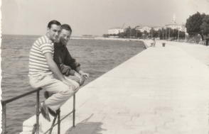
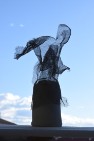

Sprits
of Zadar
Mentor: Ivana Fabrio
Industrial design 2
2023.
The cityscape seems tailored for transient visitors rather than its residents, a consequence
of
the homogenizing effect of mass tourism in Mediterranean cities. This shift leaves behind
hollow
shells of what were once vibrant communities.
Why is Zadar losing its "townness"?
"Our city is turning into a tourist backdrop. The same problems are faced by other historic
coastal cities, from Venice to Dubrovnik. The monoculture of tourism is to blame for this,
an
economic circumstance that drains the life out of our cities."
Jukić, T. i Vukić, F. (2015)
Spirit installations were created as an activist intervention inspired by the current problem of
thedisappearing of the city’s identity. In my work I referred to the city I grew up in, the city
of Zadar whoseproblem I’m most familiar with.It reaches the point in which the cities are shaped
for passersby not for its citizens. The monoculture ofmass tourism slowly erodes most of the
cities in the Mediterranean and they become just a facade shapedby cheap attractions tailored to
satisfy specific needs of temporary visitors.There are fewer and fewer people living in the
city...

Activist spirit installations are made as a reconstruction of the city’s ruins, but not in a way
that restorestheir former appearance, but represents the one thing the city needs the most; its
people.There is no city without people, they are its soul, its spirit.The spirit entity can be
perceived in two ways.A spirit can be seen as a monster, a remnant of something that was once
alive. Spirit represents death,dying, emptying, non-existence of the material. At the same time,
we can look at the concept of spirit asa part of identity: the spirit of space, the spirit of
time, the spirit of the city. Faced with a problem that islargely beyond my reach, the spirits
are my cry and demand that should initiate procedures of returningpeople to the city
Urban questionnaries
Deployed strategically across multiple locations within Zadar, these urban questionnaires
featured a concise yet thought-provoking statement: 'Zadar is...' alongside a readily available
pencil. The intention was to engage residents and visitors, prompting them to take a moment and
articulate their personal impressions, memories, and perceptions about the city, thereby
fostering a diverse collection of insights that reflect the multifaceted essence of Zadar.
"Zadar is a city that lacks that something to be perfect. How do you comment
on this
statement?"
"Yes, I would agree that that something is people."
from interview with Pavuša Vežić
"A city isn't made of stones, a city is made of people." It all starts with that crucial
point,
which is the lack of citizens, the lack of people. When there are no citizens, it's normal
that
there isn't what you are talking about, but if there were citizens, I would give them those
spaces, let them live, let them use them, those are spaces of their city, so their spaces.
However, the outflow from the city is still being supported. I emphasize, not only in Zadar.
This is a general problem of this mass, primitive tourism."""
from
interview with Pavuša Vežić
Zadar, an ancient Roman city, features
numerous ruins and damaged objects
scattered throughout. Rather than restoring the past look of these elements, activist spirit
installations syimbolise what the city is truly mising, the city's most vital element: its
people.
The concept of 'spirit' holds a duality. It can signify the decay of something once lively, an
embodiment of emptiness and absence. Yet, it also encapsulates the essence of identity—the
spirit of a place, time, or city.
models


"This merely illustrates the answer to your question of whether something different should
be done. I think it should. I think it should be directed towards bringing the citizens back
to the city. Because a city without citizens isn't a city. There should even be social
programs, economic programs to help people if their apartments are run-down. Let's give them
a manageable loan so they can renovate their apartment, but let them continue living in the
city, and not have it exposed to greedy speculators, people who buy dilapidated apartments
to turn them into transient lodgings, not for the citizens. This way it may appear nice and
fine, but as you mentioned earlier, it's drying up, our city is drying up."
from
interview with Pavuša Vežić
Utilizing “Spirit” installations as scenic backdrops for cultural events not only addresses
the issue and captures media attention but also facilitates a dialogue through tactical
urbanism. These installations serve as a poignant call for citizens to reclaim their city,
erasing the label of an empty ghost town.